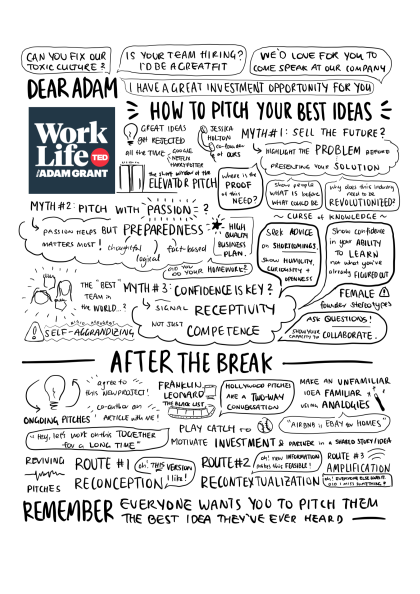

How to Pitch Your Best Ideas
As .png: 
As <img> 9from) inside column-page:
- simple to include but anchors (hyperlinks) don’t work
- converts to
<img class="img-fluid">

As object inside .column-page div:
- hyperlink works but size doesn’t adjust correctly
- fixed it by adding
width=100%attribute to match the.img-fluidclass defined in quarto-cli/~/_bootstrap-rules.scss
About:
Links to: